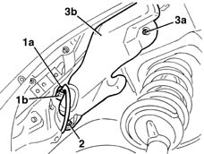
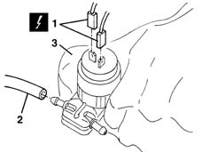

5050A10 windscreen washer fluid reservoir (in engine bay) - r+r
- Path
- Procedures > 50 AUXILIARY UNITS > 5050 SCREEN WASHERS AND HEADLAMP WASH/WIPE > 5050A windscreen and headlamp washer reservoir > 5050A10 windscreen washer fluid reservoir (in engine bay) - r+r
- Kind
- repair procedure (removal / refitting; the operation number is the code)
- Applies to
- all engines; all production periods
- Interactive page
- https://sloeber94.github.io/elrnDB-lYpsln/en/#/2429343
Applies to: all engines; all production periods
 Removing
Removing
 Refitting
Refitting7055B90 Left front WHEEL ARCH LINER - R.R.
1. Disconnect pipe (1a) from the windscreen wiper pump (1b) and let the washer fluid flow into a suitable container.
2. Undo the bolt.
3. Undo bolts (3a) and move screen washer fluid reservoir (3b) slightly to one side.

Applies to: all engines; all production periods
1. Disconnect the electrical connection from the washer pump.
 | Name | Connector |
|---|---|---|
1 | Windscreen/rear window pump motor |
2. Disconnect the pump pipe.
3. Recover the washer fluid reservoir.
If necessary, remove the pump from the reservoir.

Applies to: all engines; all production periods
Refitting
RemovingCheck that the reservoir is not damaged.
Fit the pump, if removed previously.
Connect the pipe to the pump.
Connect the electrical connections .
Tighten the bolt.
Connect the pipe to the pump.
Refill the windscreen washer fluid reservoir.
Test windscreen washer operation.